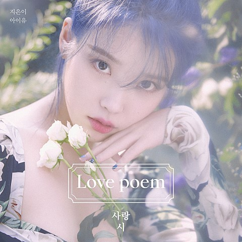

Blueming

곡 소개
사랑을 주제로 한 가사 중 내가 가장 좋아하는 작품은 심수봉 선생님의 ‘백만송이 장미’다.
미워하는 마음 없이 실천한 사랑의 결실을 한 송이 장미꽃으로 표현한 것이 나에게는 사랑에 대한 어떤 비유보다 시적이고 아름답게 느껴진다.
내가 단기간에 가장 많은 장미를 피워내는 시기는 사랑에 빠진 직후다.
마음을 고백하기 직전, 결정적인 딱 한 마디만을 제외한 세상의 모든 말을 사용해 상대에게 나의 감정을 가감 없이 표현하는 때.
휴대폰 진동 소리 한 번 한 번이 내 일상을 사정없이 흔드는 지진처럼 느껴지는 때. 필터링 없이 꺼낸 말 마디 마디가 사랑시가 되는 때.
이게 정말 내 머릿속에서 나온 게 맞나 싶은 낯선 결의 문장들이 쏟아져 나온다.
그 시기만큼은 백만 송이 장미를 거뜬히 피워낼 수 있을 것 같은 자신이 들 정도로 내 안에 사랑이 넘친다.
우리의 대화창 속 내 색깔처럼 새파아란 색의 장미를, 그 장미의 꽃말과 같은 ‘기적’을, 그 ‘불가능’에 가까운 결실을,
내가 이번에야말로 백만 송이 정도 피워낼 수 있을 것 같은 확신에 찬다.
아직 단 한 번도 성공해 본 적은 없지만..
‘스물셋’에서 재기 발랄한 사운드와 균형 있는 팀워크를 보여 준 이종훈, 이채규, 아이유 조합의 곡으로 Electro pop-rock이다.
개성 있는 신스 소스와 역동적인 밴드 사운드가 어우러져 유니크한 결과물을 만들어냈다.
뮤직비디오는 나이브 프로덕션이 트렌디한 연출로 프로젝트의 완성도를 높였다.
감상하러 가기
더 많은 정보 보러가기
홈으로